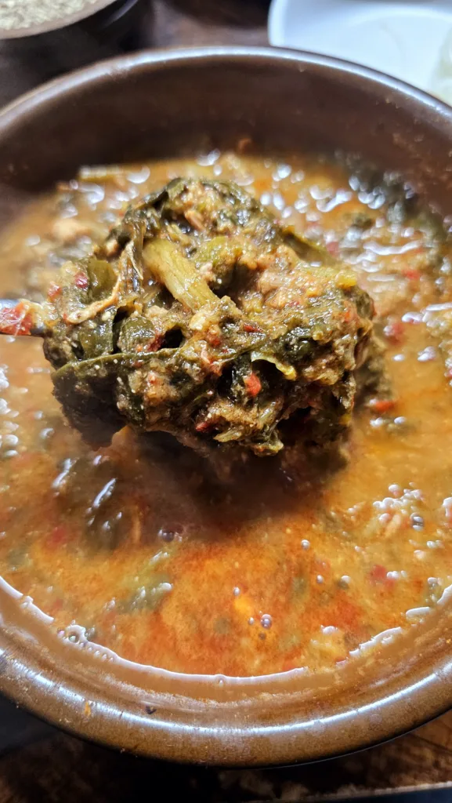
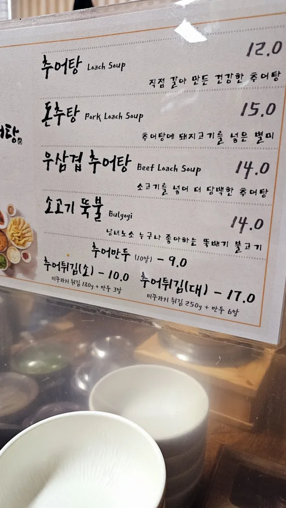
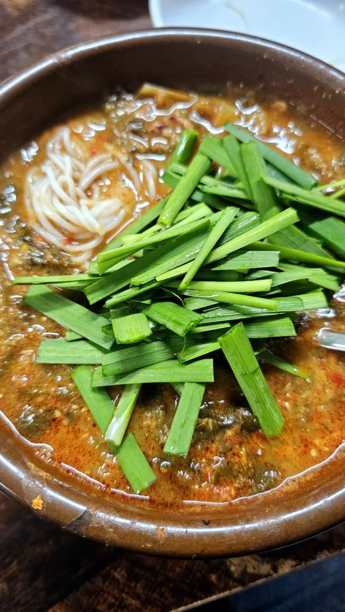
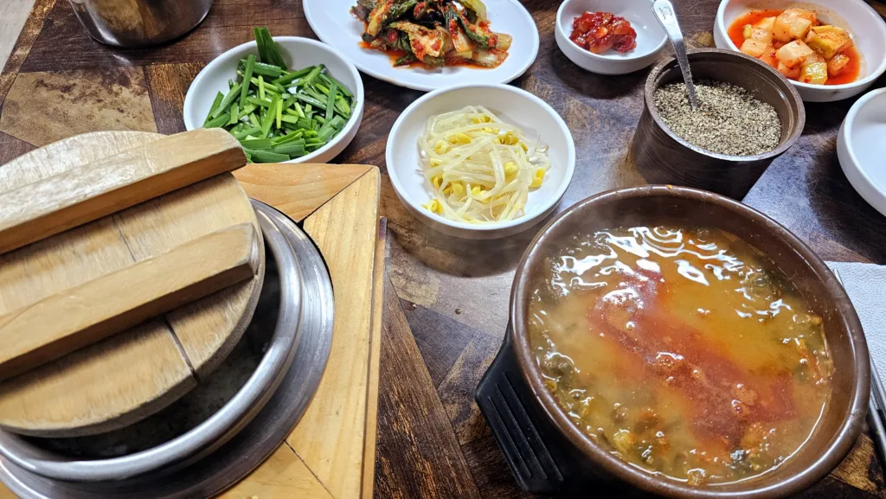

개요
광화문 일대에서 점심으로 든든하면서도 깔끔한 한식을 찾고 있다면, 정동추어탕을 추천합니다. 직접 방문해본 후기를 바탕으로 맛, 구성, 분위기까지 소개합니다.

1) 정동추어탕
위치: 서울 중구 새문안로 30
운영 시간: 월~금 0930 - 2030 / 토요일 1000 - 1930 / 일요일 정기휴무
분위기: 낡았지만 넓은 홀과 큰 테이블이라 여유로움, 점심시간에는 웨이팅 있을정도로 바빠서 약간 정신 없음

2) 주문 메뉴 & 가격
정동추어탕은 전통적인 추어탕 외에도 색다른 메뉴 구성이 매력적
기본 추어탕 12,000원
돼지고기 추어탕 15,000원
우삼겹 추어탕 14,000원
3) 음식 맛 & 구성
정동추어탕의 가장 큰 매력은 깔끔한 국물 맛
전통 추어탕의 진한 맛은 살리되, 느끼함 없이 부드럽게 넘어가는 맛이 인상적
돌솥밥이 나와서 숭늉도 해먹을 수 있어 아주 든든함 따뜻한 밥과 먹는 추어탕도 일품
직접 먹어본 돼지고기 추어탕은 고기가 갈려 나와서 먹기 편함
추어탕 특유의 비린 맛이 거의 없어 초보자도 부담 없이 먹을 수 있음

4) 서비스 & 청결 & 주차
직원분들의 응대도 친절하고 빠르며, 테이블 회전도 빨라 점심시간 웨이팅이 있어도 금방 들어갈 수 있어요.
다른 후기에서 불친절 얘기가 있었으나 저는 경험하지 못했어요. 다만 바쁜시간에는 약간 불친절하다 느낄만한 포인트는 있는 것 같아요
위생도 나쁘지 않았어요.

5) 총평 및 추천 포인트
별점: ⭐️⭐️⭐️⭐️
깔끔한 맛의 추어탕, 비린맛이 적어 입문자도 OK
광화문 직장인 점심으로 딱 좋은 회전율
제주 몸국이 떠오르는 돼지고기 추어탕의 독특한 맛
깔끔하고 넓은 홀
광화문 점심 맛집, 건강한 한끼로 강력 추천!